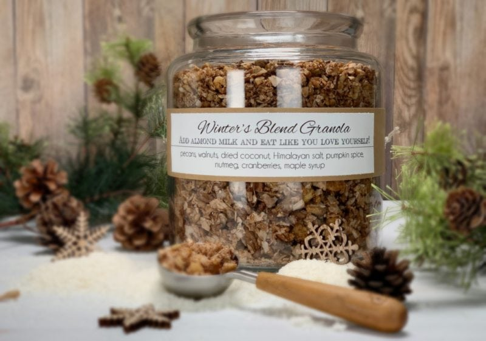
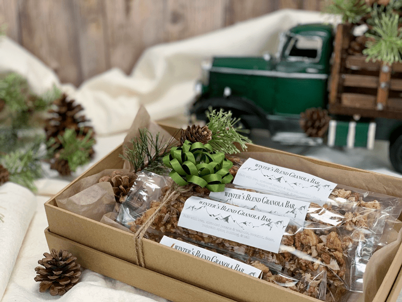
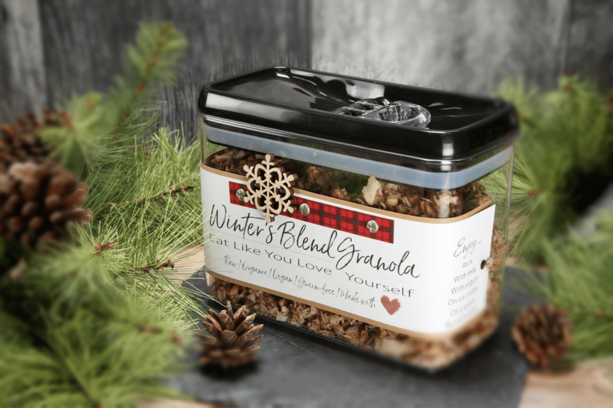
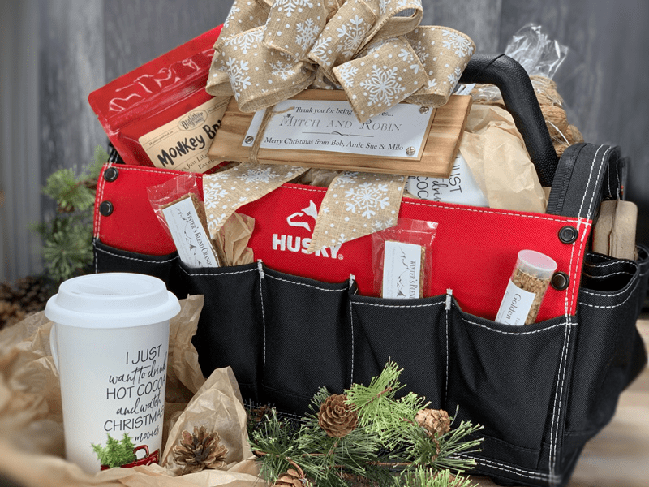
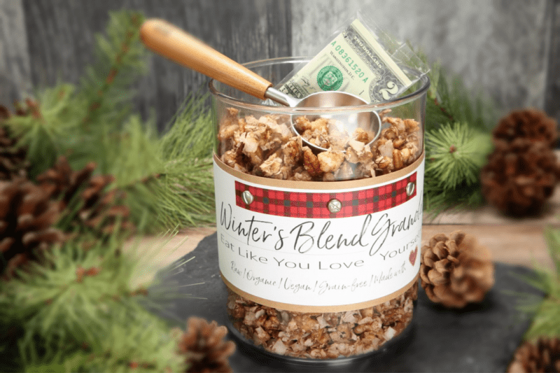
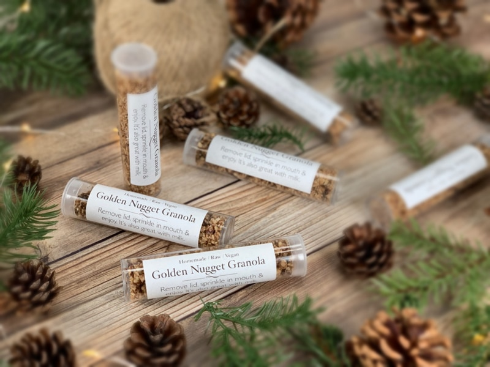

Gift Packing Ideas for Granola
I thought I would take a moment from the busy season to share some gift-giving ideas with you. A homemade food gift, created in the kitchen and presented prettily, is truly a joy to give or receive. I am going to focus on granola and packaging ideas… keep in mind you can take these concepts and use them with a lot of different foods, bags, and containers. The idea here is to get the creative juices flowing.

When you think of giving homemade gifts from the kitchen, granola may not cross your mind, when indeed, it makes for an excellent gift! First of all, it’s made with love. We NEVER skip that ingredient, it’s the most nutrient-dense ingredient ever created! I have so many different flavors of granola on the site so you can match a granola to the person that you are making it for. Click (here) for inspiration. Once you have your delicious granola made, you will want to package it and slap a label on it. Here are a few tips…
Packaging
There are TONS of creative packaging out on the market these days. Check craft stores (they usually have a baking section), bakery supply stores, Amazon, and so forth. Think outside of the “box” and be creative.
- Make sure all containers are food safe.
- Make sure that the container seals tightly to protect the freshness of the food.
- Glass jars, such as Mason jars work wonderfully and they are reusable for the gift recipient.
- Use a container that will protect the item you made. Example: if you want the granola to stay in larger pieces, use a hard-shelled container.
- If you are using soft material packing bags, it’s always nice to place them in a hard container such as a ceramic canister, decorative wooden box, toolbox… the possibilities are endless!
Labeling
Besides the container, labeling your food items is right up there with importance. With all of the food allergies and dietary restrictions these days, it’s vital that the recipient knows what is in the food item you made.
- If you created your own recipe, give it a name.
- Make sure the label states the ingredients, doesn’t need to be the recipe, just a simple list of ingredients.
- You can create labels in any Printshop program out there. Or if need be, write it out by hand.
- You can print the labels out on cardstock paper, punch a hole in the corner, and thread some ribbon or twine through the hole and attach to the gift bag. You can also staple it to some packaging.
- You can also print the label out on full-sheet sticker paper and cut them to size. You can find this specialty paper at office supply stores or Amazon.
Below I am sharing some ideas with you on how I packaged my granola gifts this year. The key is to have fun. Let’s start off with a large glass container for gift-giving. I don’t know about you, but if I got this as a gift, I would have thought I struck gold! They come in so many shapes, sizes, and price ranges. If money is tight or even if it isn’t… you can find nice jars at thrift stores. It’s always easier on the planet to reuse items as much as we can.

If you want to give the granola as a little side gift, then use smaller jars. But if you want it to be the main attraction, get a nice sized one. Create a label and attach it with tape or twine. You can really make it personal by adding their name to the label or add some sweet message for them. To take it a step further you could include a pretty cereal bowl and spoon or a container of freshly made almond milk!

Here, I packaged the granola in food grade plastic bags that I picked up at the craft store that are similar to (these). If you wanted something larger, you can use (these). These bags have adhesive strips so you can seal the bags shut. I created the labels in my Printshop program and printed them out on sticker paper like this (one).
For a gift-giving idea, you could place them in a beautiful canister as shown in the left photo. Just make sure that they are tall enough to fit the bags that you created. Now, if you plan on making these for home, place them a large clear jar on the countertop for a quick grab-and-go. These are great to throw in Christmas stockings, the kid’s lunchbox, your husband’s briefcase, your purse, or coat pocket.

For the photo above, I purchased these containers at HomeGoods. They have a sealing lid that I felt was perfect for storing the granola. These were placed in a gift basket that I created for our friends. Well, it wasn’t really a basket, it was a toolbox. :) It was so fun creating foods to tuck in this toolbox. Once all the goodies have been enjoyed, the toolbox can be used. I love that, don’t you?

The container below is the same as the one above, just a different shape. What I am really showing you is how I tucked a two-dollar bill in the container for our friend’s little boy to discover. Remember when cereal boxes had toys in them? Maybe they still do. Haha, I can’t remember the last time I bought a box of commercially made cereal.

Well, I could seriously go on and on regarding this whole topic. I have so much fun being creative with packaging. I hope you found some inspiration through it all. If you have any comments or questions, please share them below. It means a lot to me to hear from you. blessings, amie sue

© AmieSue.com